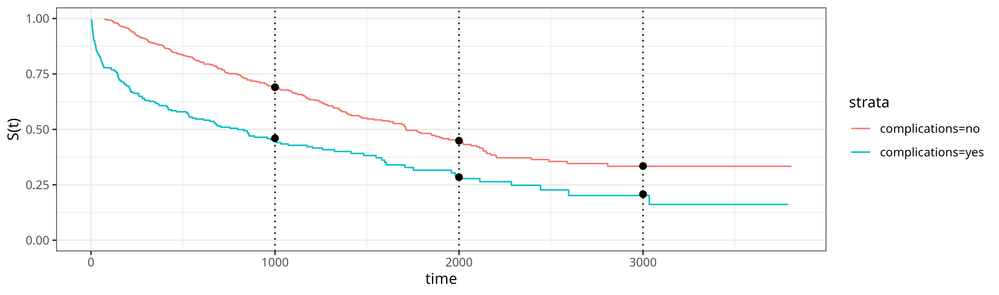
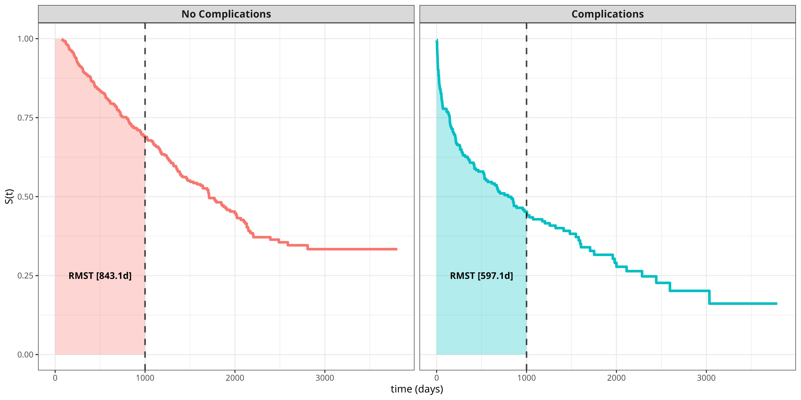

19 Pseudo-value Regression
This page is a work in progress and minor changes will be made over time.
Pseudo-value-based approaches were introduced to survival analysis by Andersen et al. (2003; see Andersen and Pohar Perme 2010 for an overview) and have since gained traction due to their flexibility and ease of application. This approach allows regression learners to be used to make predictions for transformed survival data, conditional on covariates, after both censored and uncensored survival times are transformed to pseudo-values. This reduction has two steps. Firstly, the survival outcomes \((\mathbf{t}, \boldsymbol{\delta})\) are transformed to ‘pseudo-values’ \(\boldsymbol{\theta}\), termed because they are not identical to the outcome of interest but behave similarly in expectation. Then, a regression model is trained to learn the relationship between the features from the original dataset to the pseudo-values.
Formally, let \(\psi(\tau|\mathbf{x})\) denote the (population) quantity of interest, for example the survival probability \(S(\tau | \mathbf{x})\) or the restricted mean survival time, \(\text{RMST}(\tau | \mathbf{x})\) and \(\psi(\tau)\) denote the marginal (univariate) version of the quantity of interest. Let \(\hat\psi(\tau)\) denote the respective estimate such as the Kaplan-Meier estimate computed from all \(n\) observations and \(\hat\psi^{-i}(\tau)\) be the same estimate computed by omitting the \(i\)-th observation from the dataset.
The pseudo-value for observation \(i\) is defined by the jackknife procedure, \[ \theta_i(\tau) = n\hat\psi(\tau) - (n-1)\hat\psi^{-i}(\tau). \tag{19.1}\]
Thus, the calculation of all pseudo-values, \(\boldsymbol{\mathbf{\theta}} = ({\theta}_1 \ {\theta}_2 \cdots {\theta}_{n})^\top\), requires \(n+1\) estimates of the univariate estimator (\(n\) calculations of \(\hat\psi^{-i}(\tau)\) and one calculation of \(\hat\psi(\tau)\)) per \(m\) time points of interest, leading to \(m(n+1)\) total calculations. This may seem prohibitive, but calculation of univariate estimators are usually very fast, and methods that use efficient approximations have been proposed in the literature (Parner et al. 2023; Bouaziz 2023). Furthermore, pseudo-value analysis is most commonly used only when a few time points are of interest so \(m\) is small, which is usually enough unless a fine grained estimation of the distribution is of interest.
Pseudo-values have two key properties that motivate their use as regression targets. First, by construction the empirical mean of the pseudo-values equals the global, featureless estimate, \[ \frac{1}{n}\sum_{i=1}^n \theta_i(\tau) = \hat\psi(\tau). \tag{19.2}\] This is a deterministic identity that follows directly from (19.1) and says that pseudo-values distribute the global estimate \(\hat\psi(\tau)\) across the \(n\) subjects.
Second, treating \(\theta_i\) as a random variable in the underlying sample, under mild conditions on \(\hat\psi\) the conditional expectation approximates the conditional population quantity (Andersen and Pohar Perme 2010; Andersen et al. 2003): \[ E[\theta_i(\tau) \mid \mathbf{x}_i] \;\approx\; \psi(\tau \mid \mathbf{x}_i). \tag{19.3}\] This approximate unbiasedness is what justifies regressing \(\theta_i\) on \(\mathbf{x}_i\). The relationship between features \(\mathbf{x}_i\) and pseudo-values \(\theta_i(\tau)\) is then learned through a regression model, fitted separately for each \(\tau\) of interest, \[ E[\theta_i(\tau)\mid\mathbf{x}_i] = r(f_{\tau}(\mathbf{x}_i)), \tag{19.4}\] where \(f_{\tau}(\mathbf{x}_i)\) is a function of the features \(\mathbf{x}_i\) that is learned by the model; for example, \(f_{\tau}(\mathbf{x}_i) = \mathbf{x}_i^\top\boldsymbol{\beta}_{\tau}\) for linear regression. The subscript \(\tau\) indicates that the function is different for each time point \(\tau\). The function \(r(\cdot)\) is a known response function that maps the predictor to the target space; its inverse \(r^{-1}(\cdot)\) is the link function familiar from generalized linear models. Examples include the identity (linear regression) and the sigmoid (binary regression). The response function is required as pseudo-values can take any value on \(\mathbb{R}\) but the target quantity of interest might be constrained to a smaller set, for example survival probabilities must be within \([0,1]\). The response function may be estimated during model fitting, as in generalized estimating equations (Hardin and Hilbe 2012), or applied to the raw predictions as in many machine learning methods.
It follows from (19.3) and (19.4) that the fitted regression models can be used to make predictions of the quantity of interest conditional on covariates from new data \(\mathbf{x}^*\),
\[ \hat\theta(\tau\mid\mathbf{x}^*) = \hat{\psi}(\tau\mid\mathbf{x}^*) = r(\hat{f}_{\tau}(\mathbf{x}^*)). \]
The following sections introduce concrete examples assuming \(r(f(\mathbf{x})) = f(\mathbf{x})\) for illustration: survival probabilities (Section 19.1) and the restricted mean survival time (Section 19.2). The choice of \(r\) is then discussed in Section 19.3, where its consequences for estimation and the interpretation of covariate effects are spelled out. Finally, Section 19.4 extends this reduction to competing risks and multi-state models.
19.1 Pseudo-values for survival probability
This section details the use of pseudo-values for the estimation of the survival probability conditional on features. For illustration, consider the tumor dataset (introduced in Section 3.2, Table 3.1), which contains right-censored data for \(n=776\) observations on time-until-death after operation (in days) and features ‘age’ and ‘complications’, which indicates whether complications occurred during tumor removal. For this example, a simple linear model is used for (19.4) but recall any regression model (including machine learning methods) is possible.
Say one is interested in the conditional survival probability of tumor patients at time points \(\tau \in \{1000, 2000, 3000\}\) days. Therefore, the true quantity of interest is \(\psi(\tau|\mathbf{x}_i) = S(\tau|\mathbf{x}_i)\), for which a natural univariate estimator is the Kaplan-Meier method, \(\psi(\tau) = S_{KM}(\tau)\). Pseudo-values are then calculated as \[ \theta_i(\tau) = n\hat{S}_{KM}(\tau) - (n-1)\hat{S}_{KM}^{-i}(\tau). \tag{19.5}\]
The resulting estimates and calculated pseudo-values are shown for the first 4 subjects of the data in Table 19.1 for \(\tau = 1000\) days. While the differences in leave-one-out Kaplan-Meier estimates appear small (\(<0.01\) difference), these lead to larger differences in pseudo-values once plugged into (19.5).
| complications | age | \(i\) | \(t_i\) | \(\delta_i\) | \(\hat{S}_{KM}(\tau)\) | \(\hat{S}_{KM}^{-i}(\tau)\) | \(\theta_i(\tau)\) |
|---|---|---|---|---|---|---|---|
| no | 58 | 1 | 579 | 0 | 0.6175 | 0.6172 | 0.8597 |
| yes | 52 | 2 | 1192 | 0 | 0.6175 | 0.6169 | 1.0600 |
| no | 74 | 3 | 308 | 1 | 0.6175 | 0.6184 | -0.0442 |
| yes | 57 | 4 | 33 | 1 | 0.6175 | 0.6183 | -0.0119 |
A linear model can then be fit to the pseudo-values obtained in Table 19.1 to obtain predictions for new data as \[ \hat{\theta}_i(\tau) = \hat{S}(\tau|\mathbf{x}_i) = \mathbf{x}_i^\top\hat{\boldsymbol{\beta}}_{\tau}. \tag{19.6}\]
To illustrate some of the main advantages of this method, now consider fitting the pseudo-values using a linear model of the form:
\[ \hat{\theta}(\tau) = \hat{S}(\tau|\mathbf{x}_i) = \hat{\beta}_{\tau,0} + \hat{\beta}_{\tau,1} x_{i,1},\quad x_{i,1} = \mathbb{I}(\text{complications}_i = \text{`yes'}), \tag{19.7}\]
for time points \(\tau \in \{1000, 2000, 3000\}\) days and let the response be the identity function, \(r(x) = x\).
The results are shown in Figure 19.1, where the black dots indicate the survival probability predictions from (19.7) and the solid lines are Kaplan-Meier estimates of the survival probabilities. The Kaplan-Meier estimates visualized in the solid lines are stratified by the ‘complication’ variable, though the usual unstratified, univariate Kaplan-Meier is used for the pseudo-value calculations. Despite not stratifying the estimator when calculating the pseudo-values, the pseudo-value estimates are still very close to the corresponding stratified Kaplan-Meier estimates. Furthermore, the difference in curves may suggest the proportional hazards assumption does not hold for this data (intuitively, patients with complications have a higher hazard in the first days after operation and therefore lower survival probability) but the pseudo-value approach can handle this as the regression model estimates \(\hat{\beta}_{\tau,0}\) and \(\hat{\beta}_{\tau,1}\) separately for each \(\tau\).
Despite using the identity response function, the estimated values are still within the required \([0,1]\) range and can in fact be directly interpreted as the effect of complications on the survival probability at time \(\tau\) (in contrast to say a Cox model which can only be directly interpreted in terms of hazard ratios). Here, \(\hat{\beta}_{1000,1}\approx -0.23\) and so the expected survival probability at time \(\tau = 1000\) for patients with complications is reduced by around 23 percentage points compared to patients without complications. This interpretability also carries to other time-points, for example at \(\tau = 2000\) days, \(\hat{\beta}_{2000,1} \approx -0.18\), and at \(\tau = 3000\) days, \(\hat{\beta}_{3000,1} \approx -0.13\), thus the average effect of complications depends on \(\tau\) and decreases over time (complications have a time-varying effect).

Of course, if the data only contained a single, discrete feature, then a stratified Kaplan-Meier estimator could be used instead of the pseudo-value approach. So as a final illustration, consider adding age to the model,
\[ \begin{aligned} \hat{S}(\tau|\mathbf{x}_i) = \hat{\beta}_{\tau,0} + \hat{\beta}_{\tau,1} x_{i,1} + \hat{\beta}_{\tau,2} x_{i,2},\\ \quad x_{i,1} = \mathbb{I}(\text{complications}_i = \text{`yes'}), x_{i,2} = \text{age}_i, \end{aligned} \]
assume again \(r(f(\mathbf{x})) = f(\mathbf{x})\). The resulting estimates are in Table 19.2, where the effects of age and complications are calculated for each time-point \(\tau \in \{1000, 2000, 3000\}\) days separately.
| \(\tau\) | \(\hat{\beta}_{\tau,1}\) | \(\hat{\beta}_{\tau,2}\) |
|---|---|---|
| 1000 | -0.2205 | -0.0032 |
| 2000 | -0.1428 | -0.0070 |
| 3000 | -0.1050 | -0.0071 |
Conditional on \(\tau\), the interpretation is equivalent to a standard multiple linear regression model. For example, at \(\tau = 1000\) days, the effect of age is \(\hat{\beta}_{1000,2} \approx -0.0032\), which means that, given everything else being equal, the expected survival probability is reduced by around 0.32 percentage points per additional year of age. In contrast, at \(\tau=2000\) days, the survival probability is reduced by around 0.70 percentage points per additional year of age (7 percentage points for a 10-year difference), meaning age has more than double the impact for later time points.
19.2 Pseudo-values for RMST
Another common use for the pseudo-value approach is the restricted mean survival time (RMST; Chapter 5), for which an unbiased, univariate estimator is \[ \text{RMST}(\tau) = \int_0^\tau S_{KM}(y) \ \,\mathrm{d}y, \] giving the calculated pseudo-values \[ \theta_i(\tau) = n \widehat{\text{RMST}}(\tau) - (n-1)\widehat{\text{RMST}}^{-i}(\tau), \tag{19.8}\] where \(\theta_i(\tau)\) is the pseudo-value of the restricted mean survival time at time \(\tau\) for observation \(i\).
Continuing the tumor data example from Section 19.1, now consider how the RMST depends on features. The general idea is illustrated in Figure 19.2, which displays survival curves for each group (complications vs. no complications) with the RMST shown as the area under the curve up to \(\tau = 1000\) days. Thus, within the first 1000 days after operation, patients with complications are expected to live 246 days less than patients without complications (the difference between the areas under the two curves).

To compare the RMST estimates to the pseudo-value approach, fit the linear model \[ \hat{\theta}(\tau) = \widehat{\text{RMST}}(\tau|\mathbf{x}_i) = \hat{\beta}_{\tau,0} + \hat{\beta}_{\tau,1} x_{i,1},\quad x_{i,1} = \mathbb{I}(\text{complications}_i = \text{`yes'}), \]
and again assume \(r(f(\mathbf{x})) = f(\mathbf{x})\) for simplicity.
For time point \(\tau = 1000\) days, the estimated coefficient is \(\hat{\beta}_1 \approx -239\). Thus, the expected RMST for patients with complications is reduced by around 239 days, which is similar to the result obtained from the Kaplan-Meier analysis in Figure 19.2. Once again, this model can be extended to include age such that
\[ \widehat{\text{RMST}}(\tau|\mathbf{x}_i) = \hat{\beta}_{\tau,0} + \hat{\beta}_{\tau,1} x_{i,1} + \hat{\beta}_{\tau,2} x_{i,2},\quad x_{i,1} = \mathbb{I}(\text{complications}_i = \text{`yes'}), x_{i,2} = \text{age}_i, \]
where \(x_{i,1}\) as before and \(x_{i,2}\) is the age of subject \(i\). The respective estimates are \(\hat{\beta}_1 \approx -230\) and \(\hat{\beta}_2 \approx -3\), such that, given everything else being equal, the expected RMST is reduced by circa 3 days per year of age. The effect of complications, \(\hat{\beta}_1\), is slightly reduced when age is included and can be interpreted as the effect of complications on RMST adjusted for age.
19.3 Choice of Response Function
The examples in Section 19.1 and Section 19.2 assumed the identity response, \(r(f(\mathbf{x})) = f(\mathbf{x})\), for simplicity. In general the response function \(r(\cdot)\) in (19.4) is a modeling choice with two distinct but related consequences: how the model is estimated, and how covariate effects are interpreted.
19.3.1 Post-hoc vs. embedded applications
The simplest approach is to apply \(r(\cdot)\) post-hoc: fit a regression model on the raw pseudo-values (e.g., minimizing squared error) and then transform the predictions. This is straightforward and works with any off-the-shelf regression method, but the optimization objective no longer corresponds to the final target space. For example, when \(r(\cdot)\) is the sigmoid, a model trained with squared error on pseudo-values \(\theta_i \in \mathbb{R}\) will not necessarily minimize the error of the final probabilities \(r(\hat{f}_\tau(\mathbf{x})) \in [0,1]\).
The alternative is to embed \(r(\cdot)\) into the fitting process by modifying the loss function. For models that support custom loss functions, such as gradient boosting or neural networks, this is particularly natural (Friedman 2001). For example, when the target is a survival probability, one can use the binary cross-entropy loss \[ \ell(\theta_i, f_\tau(\mathbf{x}_i)) = -\left[\theta_i \log r(f_\tau(\mathbf{x}_i)) + (1 - \theta_i) \log(1 - r(f_\tau(\mathbf{x}_i)))\right], \] where \(r(\cdot)\) is the sigmoid and \(f_\tau(\mathbf{x}_i)\) is the model output on the logit scale. This approach ensures the gradient updates during training are consistent with the final probability scale, which can improve calibration and estimation (Hothorn 2021). For RMST targets, which take values in \([0, \tau]\), the log link, equivalently the response \(r(f) = \exp(f)\), is a natural choice that guarantees positive fitted values and yields coefficients interpretable as log-RMST ratios (Andersen et al. 2004; Sachs and Gabriel 2022).
Identity or post-hoc transformations are usually sufficient when the pseudo-values are not too close to the boundary of the target space (such as near \(0\) or \(1\) when estimating probabilities), and may be preferred for simplicity. Embedded applications are recommended when calibration is critical or when the pseudo-values vary widely.
19.3.2 Interpretation of covariate effects
The response function also determines how estimated feature effects are to be interpreted. Table 19.3 summarizes the most common choices when estimating survival probabilities, along with their interpretations after the response function is applied; all assume a linear fitted model, \(\hat{f}_{\tau}\), for the features with coefficients \(\hat{\boldsymbol{\beta}}_\tau\). The same principles apply when using interpretable machine learning methods for black-box models instead (Molnar 2019; Langbein et al. 2025).
| Link \(r^{-1}(\hat{\psi})\) | Response \(r(\hat{f}_{\tau}(\mathbf{x}))\) | Interpretation of \(\hat{\beta}_{\tau;j}\) |
|---|---|---|
| Identity \(\hat{\psi}\) |
Identity \(\hat{f}_{\tau}(\mathbf{x})\) |
Absolute difference in \(\hat{\psi}(\tau\mid\mathbf{x})\) per unit increase in \(x_j\) |
| Logit \(\log\frac{\hat{\psi}}{1-\hat{\psi}}\) |
Sigmoid \(\left[1+\exp(-\hat{f}_{\tau}(\mathbf{x}))\right]^{-1}\) |
Log-odds ratio for the event at \(\tau\); \(e^{\hat{\beta}_{\tau;j}}\) is an odds ratio |
| Complementary log-log \(\log(-\log(\hat{\psi}))\) |
Gumbel \(1-\exp(-\exp(\hat{f}_{\tau}(\mathbf{x})))\) |
Log-hazard ratio; \(e^{\hat{\beta}_{\tau;j}}\) is a hazard ratio, equivalent to Cox PH at \(\tau\) |
| Log \(\log(\hat{\psi})\) |
Exponential \(\exp(\hat{f}_{\tau}(\mathbf{x}))\) |
Log-survival ratio; \(e^{\hat{\beta}_{\tau;j}}\) is a survival ratio |
The complementary log-log link deserves particular attention. For survival probability \(\hat{S}(\tau|\mathbf{x})\), applying the complementary log-log link gives \[ \log(-\log(\hat{S}(\tau|\mathbf{x}))) = \hat{f}_{\tau}(\mathbf{x}). \] If \(\hat{f}_\tau(\mathbf{x}) = \log(\hat{H}_0(\tau)) + \mathbf{x}^\top\hat{\boldsymbol{\beta}}\), so that the linear predictor decomposes into a \(\tau\)-specific baseline and a \(\tau\)-independent feature effect \(\hat{\boldsymbol{\beta}}\), this is exactly the Cox proportional hazards model (equation 11.3 in Section 11.2), with \(e^{\hat{\beta}_j}\) interpretable as a hazard ratio. Fitting the complementary log-log pseudo-value model separately for multiple time points \(\tau\) can therefore offer a diagnostic tool for the proportional hazards assumption: if \(\hat{\boldsymbol{\beta}}_\tau\) varies substantially across \(\tau\), proportionality is in doubt (Andersen and Pohar Perme 2010). More generally, this shows that the pseudo-value approach encompasses the Cox model as a special case, while naturally relaxing the global proportional hazards constraint.
For RMST targets, the identity link yields coefficients directly interpretable as differences in expected survival time (e.g., days), whereas the log link gives log-RMST-ratios (Royston and Parmar 2011). The identity link is most common in practice due to its direct clinical interpretability (Tian et al. 2014).
19.4 Pseudo-values in event-history analysis
The pseudo-value approach can be extended to more complex event-history settings, including competing risks and multi-state models (Andersen and Pohar Perme 2010; Parner et al. 2023; Andersen et al. 2003). The key idea remains the same: use univariate, non-parametric estimators of the quantity of interest to calculate pseudo-values, which can then be used as target variables in regression models.
19.4.1 Pseudo-values for competing risks
In the competing risks setting (Section 4.2), a quantity of particular interest is the cumulative incidence function (CIF) \(F_e(\tau)\), which represents the probability of experiencing event \(e\) before time \(\tau\). An unbiased estimator for the CIF is the Aalen-Johansen estimator (Section 4.2.2). Pseudo-values for the CIF are thus given by \[ \theta_{i,e}(\tau) = n\hat{F}_{AJ,e}(\tau) - (n-1)\hat{F}_{AJ,e}^{-i}(\tau), \tag{19.9}\] where \(\hat{F}_{AJ,e}^{-i}(\tau)\) is the Aalen-Johansen estimate of the CIF for event type \(e\) obtained by omitting the \(i\)-th observation from the dataset.
Once calculated, these pseudo-values can be used as target variables in regression models to estimate the conditional CIF \(F_e(\tau | \mathbf{x}_i)\) via (19.4). Using the identity function for the response, one can directly interpret the feature effects on the cumulative incidence of a specific event type.
19.4.2 Pseudo-values for multi-state models
In multi-state settings (Section 4.3), pseudo-values are often used in order to estimate state occupation probabilities conditional on features. These represent the probability of being in state \(e\) at time \(\tau\). Non-parametric estimators for state occupation probabilities can be obtained via the Aalen-Johansen estimator for multi-state models (Section 4.3.4). The pseudo-values for state occupation probabilities are then defined as
\[ \theta_{i,e}(\tau) = n\hat{P}_{AJ,e}(\tau) - (n-1)\hat{P}_{AJ,e}^{-i}(\tau), \tag{19.10}\]
where \(\hat{P}_{AJ,e}(\tau)\) is the Aalen-Johansen estimate of the state occupation probability for event type \(e\) at time \(\tau\), and \(\hat{P}_{AJ,e}^{-i}(\tau)\) is the same estimate obtained by omitting the \(i\)-th observation.
These pseudo-values can be used to model conditional state occupation probabilities \(P_e(\tau | \mathbf{x}_i)\) using standard regression techniques. This approach is particularly flexible as it allows for modeling state occupation probabilities directly, without the need to specify and estimate all transition hazards (Andersen et al. 2003).